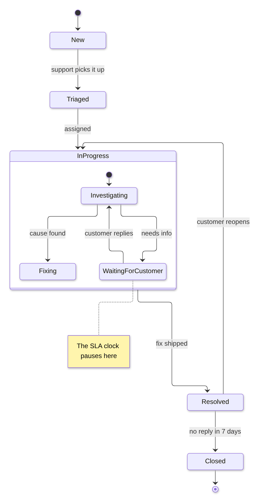

Guide · Confluence Cloud
State diagram in Confluence Cloud: state machines, free with Mermaid
Confluence Cloud does not draw Mermaid on its own. Paste a Mermaid stateDiagram-v2 block into a page and it stays a code block: readers see the states as text, not as a state diagram. A Mermaid app draws it. With Mermaid Editor for Confluence, a free app on the Atlassian Marketplace, you type the states and the moves between them and the state diagram draws next to them while you type. Below: the steps, a support ticket lifecycle to copy, how the syntax works, and the mistakes that add states you did not ask for.
What Confluence Cloud does with Mermaid on its own
Confluence Cloud does not draw Mermaid itself. In our tests in October and November 2026, a ```mermaid block pasted into a page became an ordinary code block: readers see the states as text, not the diagram. The code is kept safely, but nothing is drawn.
To see the diagram you need a Mermaid app that adds a macro to the editor, or you draw the diagram elsewhere and upload a picture. How to add Mermaid diagrams to Confluence Cloud compares those routes.
How to add a state diagram with Mermaid Editor for Confluence
Full disclosure: Dortus makes this app. The steps:
- A Confluence admin installs Mermaid Editor for Confluence from the Atlassian Marketplace. The app is free.
- Open the page in edit mode. Type
/mermaidand choose Mermaid Editor. You can also open the + insert menu in the toolbar and search for Mermaid Editor. - The editor opens with the code on the left and a live preview on the right. Click the State example to start from a short draft, review and approve example, or paste the example from this page. If you paste a block that starts with
```mermaid, the fences are removed for you. - Change the text. The preview redraws as you type. If a line is wrong, the preview says what is wrong and names the line, and that line is marked in the code.
- Click Insert diagram, or press Ctrl+Enter (Cmd+Enter on a Mac). Publish the page.
- To change it later, select the diagram in the editor and click the pencil icon. Versions in the editor brings back any of the last 20 saves.
On the page the diagram fits the width of the page. Hover over it, or tab to it, for the zoom buttons. Click it, or use Open large, to see it in a big window. SVG and PNG download the diagram for a slide or an email. In Confluence’s dark mode the diagram is drawn in Mermaid’s dark colours. A PDF export of the page shows the diagram as a picture, made when you click Insert diagram; a Word export shows the Mermaid code. The app has 12 examples to start from: flowchart, sequence, class, state, Gantt, pie, mindmap, timeline, journey, ER, architecture and kanban.
Where it lives: the app runs on Atlassian Forge. The Mermaid code is saved in the macro on the page, earlier versions and the picture for PDF export in Forge storage in your own Atlassian site, and the diagram is drawn in the browser of the person reading the page. No diagram text leaves your Atlassian site. The app does count a few actions, such as a diagram inserted, as anonymous numbers; the privacy policy lists them.
Example: a support ticket lifecycle
The life of a support ticket: new, triaged, in progress (with its own steps inside), resolved and closed, and back to in progress when the customer reopens it. Copy it and change the states to your own workflow.
stateDiagram-v2
[*] --> New
New --> Triaged : support picks it up
Triaged --> InProgress : assigned
state InProgress {
[*] --> Investigating
Investigating --> WaitingForCustomer : needs info
WaitingForCustomer --> Investigating : customer replies
Investigating --> Fixing : cause found
}
InProgress --> Resolved : fix shipped
Resolved --> InProgress : customer reopens
Resolved --> Closed : no reply in 7 days
Closed --> [*]
note right of WaitingForCustomer : The SLA clock pauses here
Drawn with Mermaid 12.2, the version the app uses.
How the syntax works
stateDiagram-v2on the first line names the diagram type. The olderstateDiagramworks too.[*]is the start when it is on the left of an arrow, and the end when it is on the right.- A move between two states is
New --> Triaged. Text after a colon is the label on the arrow:New --> Triaged : support picks it up. - A state name is one word. For a name with spaces, give it an id:
state "In progress" as InProgress, then useInProgressin the arrows. - A state with steps inside is
state InProgress {, the inner moves, and}. It can have its own[*]start. - A note goes next to a state:
note right of WaitingForCustomer : text.left ofworks too. direction LRon the second line draws the diagram from left to right instead of top to bottom.
Let an AI assistant write the first version. ChatGPT and Claude can write Mermaid. Describe the workflow in plain words, or paste the statuses from your Jira workflow, ask for a Mermaid stateDiagram-v2, and paste the answer into the editor. Read the result: assistants sometimes use state names with spaces, which split into extra states.
Common mistakes and how to fix them
- A state name with spaces.
[*] --> In Progressgives no error, but in our test it drew two states, “In” and “Progress”. Fix:InProgress, orstate "In progress" as InProgressto show the spaces. - A label without a colon.
New --> Triaged support picks it upgives no error, but each extra word became a state of its own. Fix:New --> Triaged : support picks it up. - A one-dash arrow.
New -> Triagedis an error, and the editor names the line. A hyphen in a state name, as inIn-Progress, gives the same error. Fix:-->, andInProgressor an underscore in the name. - A composite state without its closing brace.
state InProgress {with no}is an error: the editor says the bracket on thestateline is never closed. Fix: add}after the last inner move. - A note without a side.
note New : first stateis an error. Fix:note right of New : first state.
Other ways
Other Mermaid apps exist on the Atlassian Marketplace; the Mermaid guide lists points worth comparing. If the steps are a process with decisions rather than states, a flowchart may read better. For a diagram you want to lay out by hand, a drawing app such as draw.io fits better.
FAQ
Can Confluence Cloud draw a state diagram from text?
Not on its own. In our tests a pasted Mermaid stateDiagram-v2 block stayed a code block. A Mermaid app such as Mermaid Editor for Confluence draws the state diagram on the page.
What is the difference between stateDiagram and stateDiagram-v2?
Both work in the Mermaid version the app uses and draw a state diagram from the same text. The Mermaid documentation uses stateDiagram-v2 in its examples, so that is the one to pick for new diagrams.
How do I use a state name with spaces?
Give the state an id: state "In progress" as InProgress. Use the id in the arrows; the diagram shows the name with spaces.
How do I show a state with steps inside it?
Write state InProgress { on one line, the moves between the inner states below it, and } at the end. The inner part can have its own [*] start.
Can I draw my Jira workflow this way?
Yes, by typing it. The app does not read Jira workflows, but you can list your statuses and transitions, or ask ChatGPT or Claude to turn them into a Mermaid stateDiagram-v2, and paste the result into the editor.
By diagram type
A state diagram shows the states something can be in and how it moves between them. Mermaid diagram examples for Confluence has a short example of each of twelve diagram types. Guides that go deeper on one type:
- Gantt charts in Confluence Cloud
- Sequence diagrams in Confluence Cloud
- Mind maps in Confluence Cloud
- ER diagrams (entity relationship) in Confluence Cloud
- Class diagrams in Confluence Cloud
- Timelines in Confluence Cloud
- Pie charts in Confluence Cloud
- Flowcharts in Confluence Cloud
Questions
An example that does not draw for you, or a mistake we missed? Email support@dortus.com.
Mermaid Editor for Confluence by Dortus
Type the diagram, watch it draw
A Confluence macro with Mermaid code on the left and a live preview on the right. The code stays in the page, so the diagram stays editable. Runs on Atlassian Forge.
Get it free on the Atlassian Marketplace
Not a Confluence admin? In Confluence, open Apps, then Explore apps, search for Mermaid Editor for Confluence and send a request. Your admin gets an email and can install it.
See also: How to add Mermaid diagrams to Confluence Cloud (including diagrams from ChatGPT or Claude)